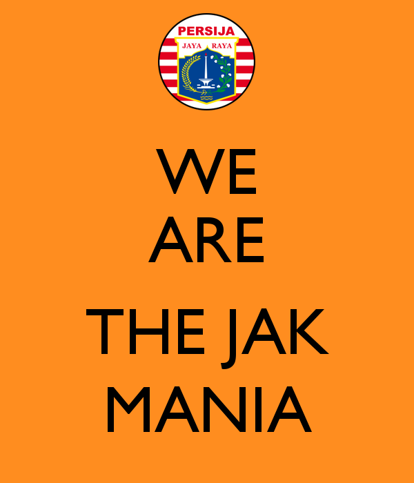

Sejarah Berdirinya Persija Jakarta dan The Jakmania
Sejarah berdirinya Persija – Orang bilang, bangsa yang besar adalah bangsa yang gak lupa sama sejarahnya. Memang benar, sejarah sebagai bagian dari identitas suatu kelompok, sangat berperan besar dalam membentuk kebanggaan dalam diri anggotanya.
Bangsa Indonesia, dengan mengetahui sejarah Indonesia, bakal menumbuhkan semangat nasionalisme di dalam dirinya.
Tulisan di bawah ini insya Allah bakal sedikit nerangin gimane awalnye Persatuan Sepakbola Indonesia Jakarta atawa Persija ini bisa berdiri.
Fakta tentang sejarah berdirinya Persija ini kebanyakan gw dapetin dari tulisan Bung Ferry Indrasjarief dan Bang Gerry Anugrah Putra. Kalau ente mau tau sejarah Persija yang lebih kumplit, langsung aje ke facebook atau tumblr nya beliau.
Prestasi
Perserikatan
Tahun 1931, Juara Perserikatan, sebagai VIJ Jakarta (1)
Tahun 1933, Juara Perserikatan, sebagai VIJ Jakarta (2)
Tahun 1934, Juara Perserikatan, sebagai VIJ Jakarta (3)
Tahun 1938, Juara Perserikatan, sebagai VIJ Jakarta (4)
Tahun 1964, Juara Perserikatan (5)
Tahun 1973, Juara Perserikatan (6)
Tahun 1975, Juara Perserikatan, bersama dengan PSMS Medan(7)
Tahun 1977, Juara Perserikatan (8)
Tahun 1979, Juara Perserikatan (9)
Tahun 1990, Peringkat Ke-10 Perserikatan